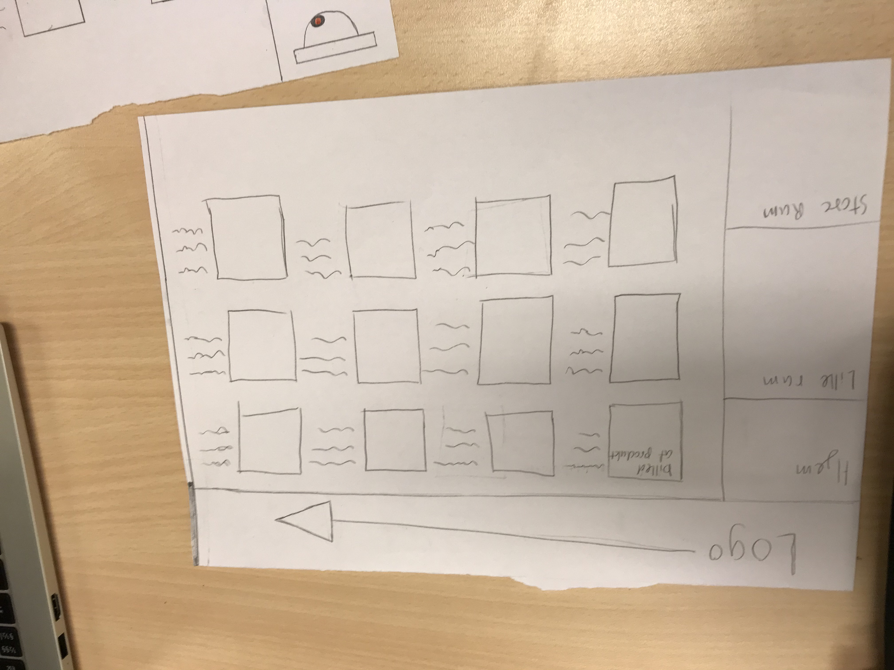
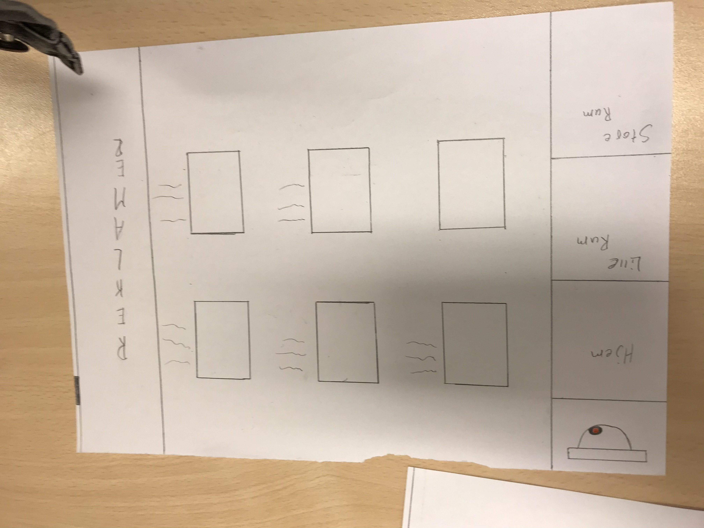
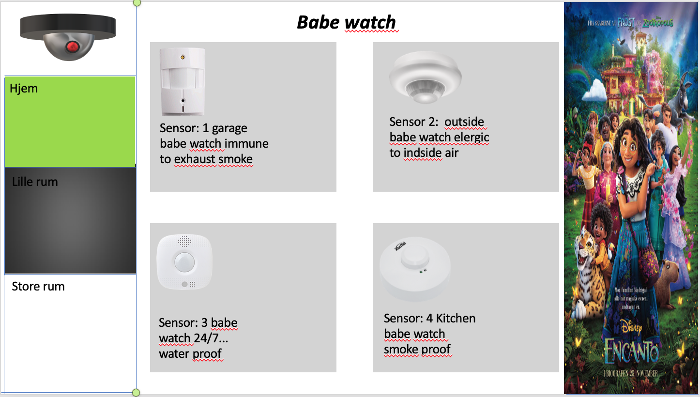

Informatik Noter
Mål: Kende til basal terminology indenfor cybersikkerhed og hvordan man kan beskytte sig selv på nettet.
C.I.A
C=confindentiality
I= ntergritet: en sikkerhed om at der ikke er nogen andre som der ser på hvad det er du laver, og at du kan stole på hvad du bliver sendt
A= avalibility: hvor tingændlig noget på internettet er.
3 typer for verifaing
1. Noget man ved( kodeord)
2. Noget man har(nøglekort, nem id, ens telefon)
3. Noget man er(fingeraftryk, ansigt) dette kaldes også biometrix kavlifiatiering.
2-factor-verificering: når man bruger flere former for verificering på engang. Eksempelvis kunne skulle loge ind på en app med et kodeord og så bagefter bruge dit nem-id for at bekræfte at det er dig.
3 privilegere af cybersikkerhed:
1. Læse: hvad har man lov til at læse og få at vide
2. Skrive: at hav lov til at ændre i data
3. Løs: have styring over et system
trussels model
- Hvem beskytter man imod
- Hvad/hvem beskytter vi
- Hvordan skal vi beskytte
- Hvilke trusler beskytter vi imod
Eksempel med gymnasieelever som prøver at ændre karaktere
- Hvem beskytter man imod: gymnasieelever
- Hvad/hvem beskytter vi: karaktere
- Hvordan skal vi beskytte: ekstra verifation, eller slukke sin computer når man er færdig med den.
- Hvilke trusler beskytter vi imod: fysisk adgang til karaktere
Andet eksempel på en trussel model over folk som prøver at få bank oplysninger ud af en
- Hvem beskytter man imod: folk som der udgiver sig for at være bank folk af en art.
- Hvad/hvem beskytter vi: folks bank oplysninger og dermed deres penge
- Hvordan skal vi beskytte: Gøre at kun en bestemt person må vide relevante informationer. Lave en form for verifation så kun en slev kender og så kun en selv kan vælge ar overføre penge. Denne kode burde så kun kendes af personen so har kontoen. Måske burde dette også være en form for 2-factor-verificering.
Hvilke trusler beskytter vi imod: at ens penge kan blive stjålet
Brute force: prøve ar gætte alle mulig koder. Eksempel med en hængelås, hvor man starter med 0000, og så bagefter 0001 og så 0002 osv.
Social Engineering: at manipulere folk i stedet for at hacke teknologien. Phising og pretexting falder under denne katagori
Phising: når man eksempelvis for en e-mail om at skulle skifte kodeord og du ender med at sende dit kodeord til nogen andre.
Pretexting: Eksempelvis hvis du bliver ringet op af nogen der lader som om de er andre end de er så de kan få informationer ud af dig. Deep fake falder også under det.
Trojansk hest: når du kommer til at donwloade et program, som du ikke tror er farligt, og det i virkeligheden er noget andet.
Ransomware: et program som der tager ens data som gidsel. Eksempelvis hvis du gennem en trojansk hest bliver lukket uden for din computer kan hackerne så bede om penge for at åbne den op igen.
Buffer overflow:
Sql injection: når du skriver en kode ind i systemet uden egetlidt at have adgang til det. eksempelvis hvis du på dit login navn skriver en kode kan du manipolere med databassen.
Worms, virus:
CSS: Hjælper til at definere hvordan siden skal se ud
HTLM: hjælper til hvad siden skal indeholde
HTML: https://www.w3schools.com/html/html_intro.asp
CSS: https://www.w3schools.com/Css/css_intro.asp
DOM(dokument object model): et interface der påvirker en eller flere HTML. Den er bygget op på javascript
Javascript: hjælper til at gøre hjemmesider dynamiske. Med en kan du få din side til at gøre andre ting. Eksempelhvis kan du med 1 script ændre titlerne oppe i toppen. På den her måde ligner javascript, css. Forskellen er, at med css så er der kun nogle bestemte ting du kan gøre, hvor med javascript så kan du en masse forskellige ting som du selv finder på. Det er også i javascript hvor du laver sådan noget som funktioner som du bruger
WAN: wide area network: En masse LAN som der hænger sammen
MAC: står for media acces control Media er hvad end du nu ser og access handler selvfølig om hvad du har adgang til
Wifi: et trådløst LAN
Ip ardesse: står for Internet Protocol: Et slags nummer som din computer, telefoner, routere og andre har, som de kan blive identificeret. Den fungere også som din lokacion. Det er lidt ligesom en postkasse, hvor dele af nummeret er hvilket land du bor i og hvilken by du bor i.
Port Number: Et tal som der fortæller hvad noget der er blevet sendt skal bruges til. Hvis det skal bruges til en browser så for den et tal der fortæller det
UDP: User Datagram Protocol Hurtigt, men upræcist. Kan sende en masse data hurtigt, men ingen garentigt for at det hele kommer igennem. Bruges hvis man eksempelhvis snakker over discord
TCP: Transmisioon Control Protocol Langsom men præcis. Dette bruges når man eksempelvis downloader noget.
DNS: Domain Name Server
Contrast: contrast af størrelse, farve og juxtipation. Contrast i størrelse hjælper med at lave orden i ting. Eksempel hvis med stor tekst som overskrift og så mindre skrift til brødtekst. Farve kan også skabe contrast så der kommer mere opmærksomhed til noget. Justipaxition er når noget ikke helt passer sammen. Eksempelvis hvis man på et mode blad både har et halsterklæde og solbriller på.
Repetition: at man går det samme hele tiden, så det ikke skaber forvering. Størrelsen på siderne er det samme, og Layoutet er meget ens. Hvis der ikke er meget repetition så er der meget chaos
Alignement: skaber også orden, via esempelvis at ting er på linje.
Proximity:
White space: det tomme plads rundt om elementer. Et godt eksempel er googles søgested, hvor der kun er ordet google og en søge bar.
https://www.w3schools.com/Css/css_intro.asp
Client-server modellen:
nogle clients, som der sender forsrpørglser til en server. Det kunne være en computer eller telefon, som der sender en forspørgelse til en server omkring et eller andet relevant. Webbrowsere er også en client som der kan snakke med servere. Det sker hvergang man går ind på en hjemmeside. Flere clients kan godt deles om den samme server.
En database er et sted hvor alt den data man for tilbage bliver gemt.
3 lags arkitektur
Presentasions lager
Består af client programmer
Logic lager
Tager imode beskeder og comandoer og sørgre for at det hele køre inden det kommer til databassen
Data lager
Databasen hvor at data'en er ophold
Terminal interface
ls istedet for DIR, åbner med command og mellemrum hvorefter man skriver terminal og trykker enter
HTTP- hyper text type preporter, det er hvad der bliver brugt så clients og servers kan snakke sammen. En protocol er en standard for et eller andet, eksempel vis palle standarkder. Det fungere på den måde at hvis der bliver sent noget som ikke passer til standarden så går det hele ikke i stykker.
HTTPS, samme som HTTP men med et lagre af kryptering så den er mere sikker.
Der er nogle forskelige protokoller som man kan bruge med HTTP. GET henter ting, DELETE sletter data. POST indæstter data, eller laver noget nyt data på en eller anden måde. PUT opdatere data, foskellen mellem POST og PUT er at POST kan ændre sig fra gang til gang, mens at PUT ikke gør.
Collitions: dokumeneter i en server
Dokumenter: linjer på en tabel i serveren. Det er en slags model for hvordan data'en
Find: når man skal en finde det man gerne vil læse
Update: rettere et dokument
Delete: sletter et dokumenth
Entity relationship diagram(enheds realations diagram)
Forholdet mellem dokumenter og hvordan det er sat op. Det kunne være man havde et kunde dokument, og i den tabel skulle man så angive deres navn, id og adress. Man kan så lave et andet diagram der angiver hvilke slags ordre man kan få. Der kan man bruge en forrig key til at angive noget information fra den tideligere dokument, f.eks. Deres id eller adresse. Realationer mellem disse dokumenter kan difeneres på forskelige måder. Der kan vøre 1 til flere, hvor der skal være mindst
Joint table: noget som der forbinder 2 dokumenter så der kan være meget af begge dele
Orderes:
Pirmarikey: unik id
Forreignkey: en primary key, som kommer fra et andet dokukoment eller enhed.
Plaintekst: noget som der ikke krypteret
Symmetrisk kryptering:
En enkel nøgle til at åbne for noget data. Kun 1 nøgle til afkryptering og kryptering. Hurtigt og meget robust
Xor: samenligner plaintekst og nøglen og giver en krypteret kode
Asymmetrisk kryptering: 2 nøgler til at åbne for data. En privat nøgle som tit bliver brugt til afkryptering. Publick nøgle som man bruger til kryptering. På den måde så kan man sende en besked med publick nøglen og så kan kun en med privat nøglen aflæse den. langsomt og mindre robust
En-vejs kryptering (Hashes):
Plain tekst går igennem et hashe algorgritme og bliver til et slags digtalt fingeraftryk. Forskleen mellem hahes og symetrisk kryptering er at du ikke kan finde plainteksten ud fra algoritmen og finger aftrykket. Derudfra kan man på hjemmesider gemme fingeraftrykket istedet for selve dit kodeord. På den måde så hvis hjemmesiden bliver hacket så får hackere ikke fat på dit kodeord.
Digital signatur:
en kombination af hases og publiv nøgler.
Hvis du eksempelvis har en plainteskt, så kan du hase den hvor efter du så får dit digest, derefter kan du så kryptere den med din private nøgle så du har et krypteret digest. Så når du sender til nogen, skal du give både din plain tekst, din krypterert digest, og din public nøgle. så skal de afkryptere din krygteret digest og putte din plain tekst igennem en hasen og så hvis de er ens, ved de det er dig
Digital certifikat:
Lidt ligesom et sygesikreingskort hvor der står nogle informstioner om. Eksempelvis dit navn, føselsdag og udløbsdato. Derudover skal den også indholde din public nøgle. Den skal også have en digital signatur af CA så de ved det er officalt
Assess:
At finde ud af folk som der bruger et it-system enten har brug for eller problemer med. Derfra kan man så finde ud af hvordan man skal fikse det
Metoder til at undersøge:
Interviews
Observationer
Spørgeskema
Bruger testing
Selv kigge det igennem
Design:
Design er hvor man tager det man fandt ud af fra assess facen og prøver at finde på forskelige løsninger på problemet eller behøvet
Metoder til at undersøge:
- Persona'er
- Lave hypotetiske scenaria
- Bruger historier
- Sketing
- Sammenligne forskelige produckter
Build:
Her tager du 1 eller flere designs, og prøver at lave en form for prototybe af det. på den måde kan man så få feedback fra andre folk så vi finder ud af hvad virker og hvad der ikke gør. Efter denne fasse går vi tilbage til assess facen og begynder forfra indtil det virker.
Fidelity: hvor meget det ligner det endelige produckt
- Low- Fi: lave en prototybe på papir
- Mid- Fi: lave et digitalt produckt der ligner mere
- High- Fi: lave noget der ligener meget
Console-log: udskriver noget tekst passeret på et program du har lavet. Det kan være at du vil have at du kan se at et program du har
Lavet køre som det skal, så du laver en console log om det så du for besked når programmet køre.
Operators lader dig enten lave nogle regnestykker eller ændre på nogle variabler
Du kan lave x +=5, hvilket gør at x'ses værdi bliver pluset med 5. hvis du køre det program flere gange så vil x hele tiden for 5 oven i dens værdi. Du kan også læhhe 2 vatiabler samm, eksempelvis x -=y.
Selve variablerne kan også være bygget på operators, eksempelvis x = 5 + 8.
Der findes en del slags operators
+ er hvor man lægger værdier sammen
- Er hvor man trækker værdier fra hindane
• Er hvor mange ganger værdier
• ** er hvor et tal bliver opløftet i et eller andet, eksempelvis 2**3 = 8
• / er division
If statements:
Et if statemant kan bruges til at gøre at visse ting sker hvis en betingelse er opfyldt. Eksempelvis hvis man skriver If(gamestate = atcion) [play music]. Her er betingelsen at gamstae skal være action og hvis der skal spilles musik hvis den betingelse er opfyldt
Arrays:
En variable der kan indholdet mere en 1 værdi. Eksempelvis med
Const bil = ["Saab", "Volvo", "BMW"];. På den her måde her slipper man for at lave en vaiable
For hver. Hvis du så gerne vil bruge en af disse variabler så skal vælge hvilken en variable du bruger, her er det vigtig du husker at arrays starter ved nul. Eksempelvis hvis vi vil have en bil med variablen Saab så skal du skrive: let bil =[0];.
Man kan også lave flere arrays inde i selve arrayet. Eksempel hvis med
Const: bil = [
[Saab, 10, 20],
[Volvo, 50, 40],
[BMW, 30, 60]
]
Når du så vælger den variable du vil have, så kan du yderligere vælge en variable fra arrayet. Hvis du eksempelvis bare skriver; let car = [1]. Så vil car være lig med [Volvo,50,40]. Hvis du til gengæld skrev; let car = [1, 2] så vil car bare være lig med 40.
Loops:
Køre noget kode så længe en condition er sand. Man skirver det eksempelvis som while, det kan så skrive som:
while (betingelse)
// det kode der skal gentagens
Forskellen med loops of if statements er, at loops bliver ved med at køre så længe at betingelsen er opfyldt.
Man kan også lave noget mere kode så der også sker noget for ende af loopet.
Loops gøre at vi ikke behøver skrive lange blokke af kode igen og igen.
Promt/alert/confirm
Alert: skriver noget string efter at noget er sket. Det kan være når spillet er slut for du en alert om at du tabte.
Confirm: det er et pop up hvor du kan bekræfte om noget er true. Det kan være spillet spørger dig om du vil spille igen og så skal du svar ja eller nej.
Promt: det er når en person selv skal give information til koden. Det kan være at et spil skal bruge et brugernavn
Informatik Projekter
vi startetede ud med at skulle finde et produckt som vi kunne lave digitalt. Vi endte med at have et fokus på skolens strøm forbrug med lamper.
vi talte det til at der var omkring 15 lamper i vores lokale, vi valgte så at sige at hvert lokale havde ca. 12 lamper. vi kiggede på lectio og kom frem til at der var ca. 70 lokaler at tage højde for. efter følgende talte vi så lamperne i gangene og i salende.
vi fandt frem til at en pære på skolen brugte ca. 18 watt i timen. 1kW koster 2,4 kroner, hvilket vil sige at en lampe bruger .... i timen. vi går ud fra at lamperne er tændt omkring 12 timer om dagen i 200 dage. når vi lægger alle talende sammen for vi en pris på over 110.000kr om året.
vores har vi så tænkt os skulle være, en hjemmeside hvor du kan købe senore til gange og lokaler på skolen. disse censore skulle så gøre at lyset er tændt når der er nogen, og det ellers er slukket
her har vi så lavet en skecth af hjemmesiden


vi har deefter også lavet et senarie som muligvis kan bruges
En skole har 70 lokaler med gennemsnitlig cirka 12 lamper i et lokale, og en masse andre på gange og fællesrum. En gennemsnitlig lampe bruger cirka 4 øre i timen. Skolen er ikke så god til at for slukket deres lamper, så de kan nemt være tændt i 12 timer på en skole dag. Om året ender det med at koste en masse penge.
vi skulle så begynde at lave en prototybe af vores ide. Vi mente ikke at vi kunne nå at lave en hjemmeside med den tid vi have, så i stedet for lavet vi et power point som vi mente det skulle se ud.

jeg har prøvet at sætte et billed ind af vores hjemmeside. den kan findes hvis du scroller til højre oppe i navigations barren. den hedder PRO
vi skulle lave et object i flappy bird spillet Simon havde givet os. vores gruppe tænkt lavet noget som der pårvirket mønters værdi eller farten. valgte så at lave en "lucky block" ligesom dem fra minecraft.
ideen var så at man skulle kunne ramme blocken, og så skulle 1 af 3 ting ske. enten bliv man dobbelt så hurtigt, halvt så hurtigt, eller mønternes værdi blev for dobllet.
Vi startede så ud med bare at ændre hvordan diamanten så ud på min computer, så den lignet en lucky block. vi kunne ikke helt finde ud af hvordan man skulel for den til at kunne flere forskelige ting på 1 gang. Så i stedet for ville vi lave flere objecter som så ens ud, men kunne forskelige ting.
vi startede så med at lave det første object som skulle gøre 1 hurtigere. Vi løb så ind i et problem med det første object, vi kunne få den til at forsvinde. vi prøvet at finde ud af det, men endte med at for brug få hjælp. Da det så var blevet ordenet havde vi ikke tid til at lave flere objecter. Vores lucky block havde stadig 1 ting som vi ikke fik fikset. Ens fart blev ikke resetet når man startede på spillet igen.
der er et link til vores flappy bird spil, som du kan finde hvis du scroller til højre oppe i navigations barren. Det er den der hedder FLAP.
Vi skulle lave vores egen hjemmeside som skulle kunne snakke med en database. Databasen fik vi igennem mongodb. vi blev meget hurtigt enige om at lave en slags tinder, hvor man bedømde personer eller ting. Vi nået bagefter frem til ideen om Flextinder, hvor det var meaning at en person skulle sende et Flex ind og så skulle andre bedømme om det var et godt flex eller et dårligt et.
Vi startede så med først at lave en HTML og lavet så det mest basale. vi fandt så et billed af et rolex ur som vi satte op som vores første flex. vi lavet så en lille rød box hvor vi inden i lavet to knapper, en der hed kæmpe flex og en der hed mindre kæmpeflex. vi kopieret så koden fra skabalonen og indastte koden til knapperne.
vi løb så ind i det problem at serveren ikke snakket med databasen. Vi fandt så ud af at det var fordi vi skulle ændre database navnet til vores egen. Efter det virket, så vi kunne insætte en score. vi leget så lidt med forskelige ideer med point systemmet. vi tænkte at vi måske kunne lave et stjerne system. vi fandt frem til at man kan lave en ikke fyldt stjerne i HTML og lavet det så om til en knap, som havde en funtion. funtionen gjorde stjerne gik fra at være tom til at være fyldt. det var dog stadig ikke helt perfekt, da man kun kunne fylde en stjerne adgangen og de gav ikke nogen point i databasen.
vi satte så derefter en andet billedet ind af noget som vi mente var et mindre godt flex. nemlig titanic der sank. vi justeret så billederne og kopiret ellers bare koden fra rolex uret over. vi valgte så, istedet for stjerne systemet, at lave det at en person kun kan give point fra 1-10. med noget hjælp fra læren lykkes det os.
Hjemmesiden kan findes hvis man scroller helt til højre i navigations barren. Siden hedder Bum, fordi det var hvad vi kladte dne for sjovt, under projektet
vi havde glemt at lave et ER-diagram, hvilket var en meget stor fejl, da det var 1 af de bestemte ting som vi skulle have gjordt.
vi skulle lave en hjemmeside omkring enten fysik, eller biologi til 1g'ere. min gruppe valgte så at have om fysik og mere specefik varme.
vi lavet vores hjemmeside på, en anden hjemmeside som hedder odoo.
vi kunne kun bruge hjemmesiden i 2 uger gratis, så man kan ikke komme ind på hjemmesiden mere, men her er der en video som fotællere om den.
videon fyldte beklaglig hvis for meget til at jeg kunne få den med.